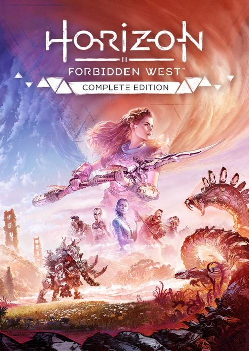

Horizon Forbidden West is a visually stunning open-world action RPG developed by Guerrilla Games and published by Sony Interactive Entertainment. Released in February 2022 for PlayStation and in March 2024 for PC, it continues the story of Aloy, a brave hunter from the Nora tribe, as she journeys into the mysterious Forbidden West to uncover the source of a deadly plague.
Set in a post-apocalyptic version of the Western United States, players explore lush biomes, battle robotic creatures, and uncover ancient secrets. Aloy’s journey blends exploration, crafting, and tactical combat with a rich narrative about survival, technology, and hope.
| Component | Minimum | Recommended |
|---|---|---|
| OS | Windows 10 (64-bit) | Windows 10/11 (64-bit) |
| Processor | Intel Core i5-8400 / AMD Ryzen 5 1600 | Intel Core i7-9700K / AMD Ryzen 7 3700X |
| Memory | 16 GB RAM | 16 GB RAM |
| Graphics | NVIDIA GTX 1060 / AMD RX 580 | NVIDIA RTX 3060 / AMD RX 6700 XT |
| Storage | 100 GB SSD | 100 GB SSD |
Get the official version of Horizon Forbidden West from the verified source below:
🔽 Download from Steam